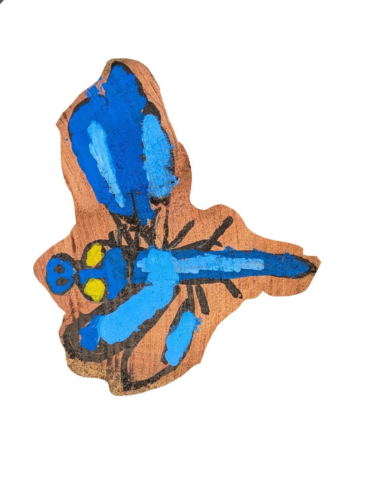

THE YARNING CIRCLE
REAL ART. ANOTHER DIMENSION.
Step inside
the story.
A painting becomes a sculpture. A voice brings it to life. Find an artwork in the circle, scan it, and settle in for a story.
01 Scan the painting02 Let it come to life03 Sit and listen
AR uses your camera. Begin close to the painting.
